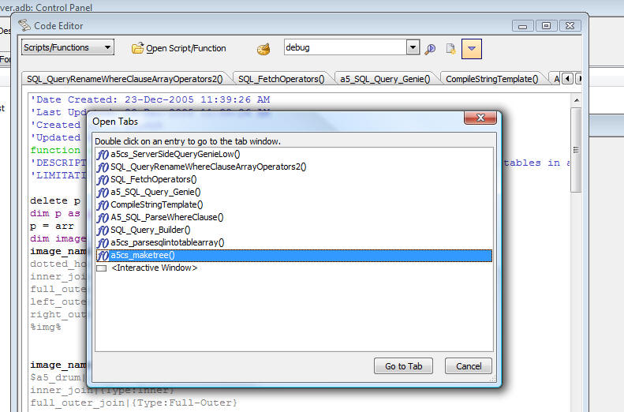

Script Editor open tabs button
If you have a lot of open scripts/functions/event handlers in the script editor, scrolling the tab list to the left or right to find the appropriate tab name when you want to switch from one tab to another can be cumbersome. A new button on the script editor toolbar opens a pop-up window showing all of the open tabs. You can double click on an entry to go directly to that tab. In addition, the drop down window when you click the 'Open Script/Function' button shown on the toolbar below can now be resized.
